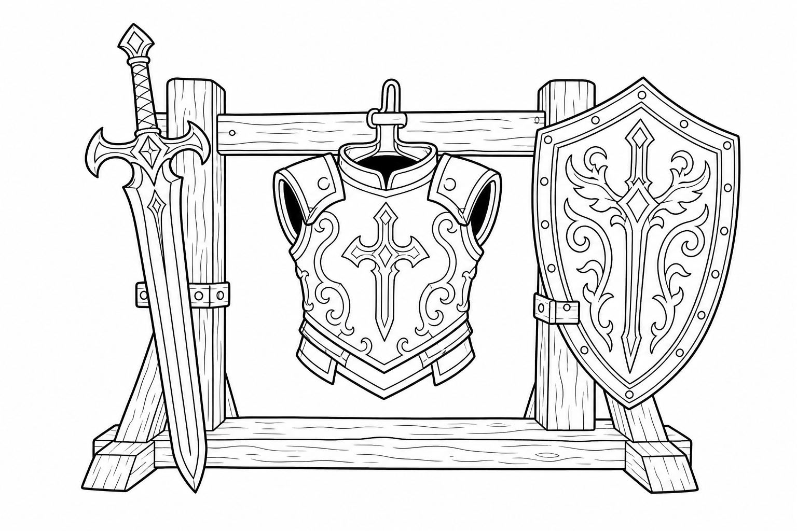
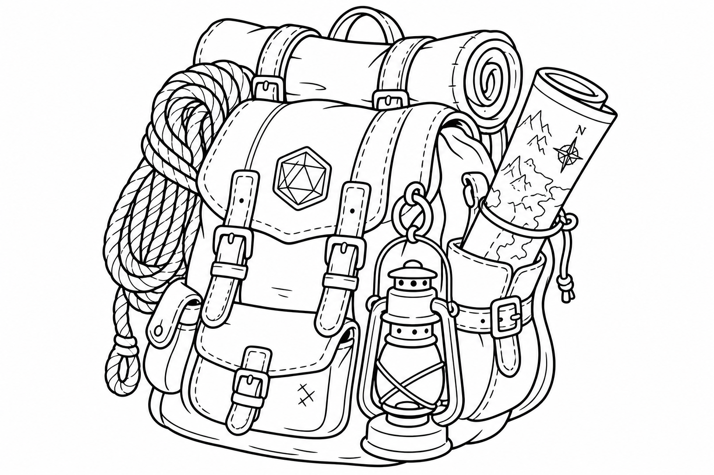
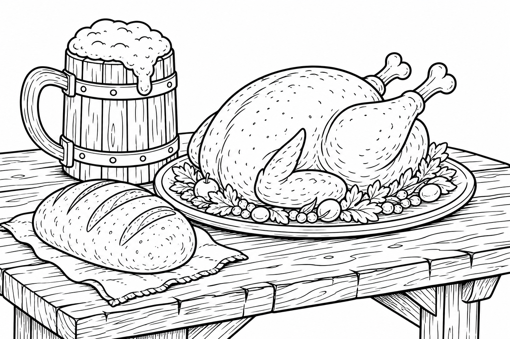
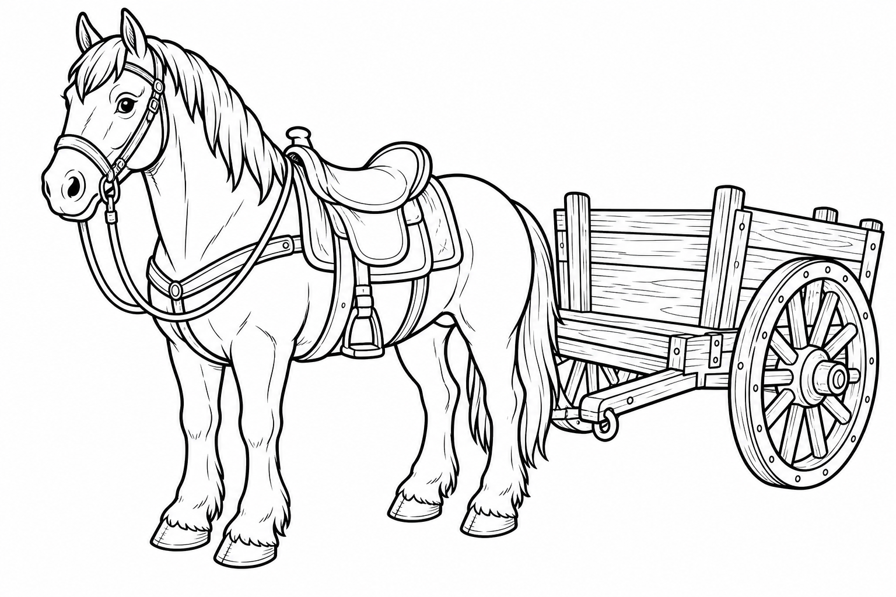
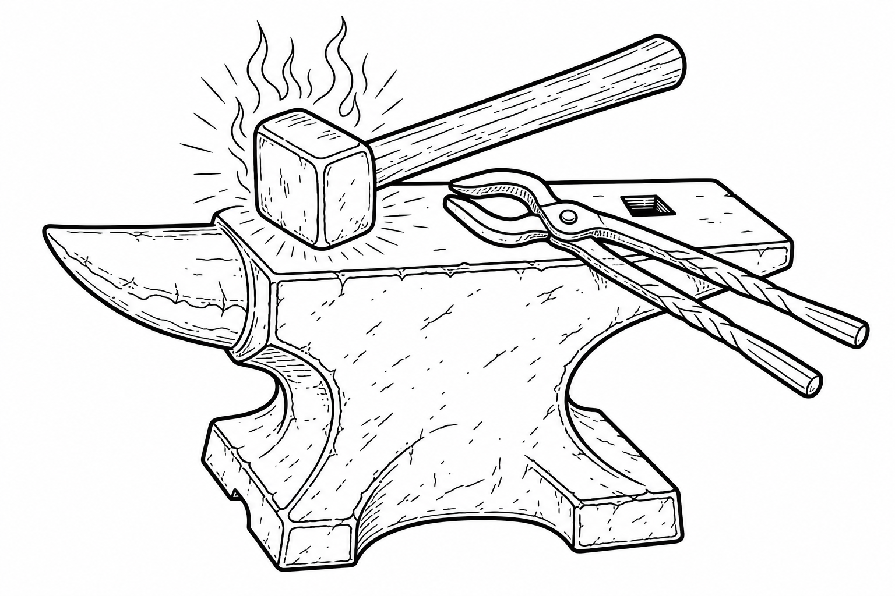

Adventurer's Shopping Guide
Kids D&D Reference
Adventurer's Shopping Guide
Welcome to the shop! Spend your gold coins (gp), silver pieces (sp), and copper pieces (cp) here to gear up for your adventure.

Weapons & Armor

Weapons
| Item | Cost | Weight | Description / Stats |
|---|---|---|---|
| Battleaxe | 10 gp | 4 lbs | Damage: 1d8 Slashing (Properties: Versatile) |
| Blowgun | 10 gp | 1 lbs | Damage: 1 Piercing (Properties: Ammunition, Loading) |
| Club | 1 sp | 2 lbs | Damage: 1d4 Bludgeoning (Properties: Light, Monk) |
| Crossbow, hand | 75 gp | 3 lbs | Damage: 1d6 Piercing (Properties: Ammunition, Light, Loading) |
| Crossbow, heavy | 50 gp | 18 lbs | Damage: 1d10 Piercing (Properties: Ammunition, Heavy, Loading, Two-Handed) |
| Crossbow, light | 25 gp | 5 lbs | Damage: 1d8 Piercing (Properties: Ammunition, Loading, Two-Handed) |
| Dagger | 2 gp | 1 lbs | Damage: 1d4 Piercing (Properties: Finesse, Light, Thrown, Monk) |
| Dart | 5 cp | 0.25 lbs | Damage: 1d4 Piercing (Properties: Finesse, Thrown) |
| Flail | 10 gp | 2 lbs | Damage: 1d8 Bludgeoning (Properties: ) |
| Glaive | 20 gp | 6 lbs | Damage: 1d10 Slashing (Properties: Heavy, Reach, Two-Handed) |
| Greataxe | 30 gp | 7 lbs | Damage: 1d12 Slashing (Properties: Heavy, Two-Handed) |
| Greatclub | 2 sp | 10 lbs | Damage: 1d8 Bludgeoning (Properties: Two-Handed) |
| Greatsword | 50 gp | 6 lbs | Damage: 2d6 Slashing (Properties: Heavy, Two-Handed) |
| Halberd | 20 gp | 6 lbs | Damage: 1d10 Slashing (Properties: Heavy, Reach, Two-Handed) |
| Handaxe | 5 gp | 2 lbs | Damage: 1d6 Slashing (Properties: Light, Thrown, Monk) |
| Javelin | 5 sp | 2 lbs | Damage: 1d6 Piercing (Properties: Thrown, Monk) |
| Lance | 10 gp | 6 lbs | Damage: 1d12 Piercing (Properties: Reach, Special) |
| Light hammer | 2 gp | 2 lbs | Damage: 1d4 Bludgeoning (Properties: Light, Thrown, Monk) |
| Longbow | 50 gp | 2 lbs | Damage: 1d8 Piercing (Properties: Ammunition, Heavy, Two-Handed) |
| Longsword | 15 gp | 3 lbs | Damage: 1d8 Slashing (Properties: Versatile) |
| Mace | 5 gp | 4 lbs | Damage: 1d6 Bludgeoning (Properties: Monk) |
| Maul | 10 gp | 10 lbs | Damage: 2d6 Bludgeoning (Properties: Heavy, Two-Handed) |
| Morningstar | 15 gp | 4 lbs | Damage: 1d8 Piercing (Properties: ) |
| Net | 1 gp | 3 lbs | Weapon |
| Pike | 5 gp | 18 lbs | Damage: 1d10 Piercing (Properties: Heavy, Reach, Two-Handed) |
| Quarterstaff | 2 sp | 4 lbs | Damage: 1d6 Bludgeoning (Properties: Versatile, Monk) |
| Rapier | 25 gp | 2 lbs | Damage: 1d8 Piercing (Properties: Finesse) |
| Scimitar | 25 gp | 3 lbs | Damage: 1d6 Slashing (Properties: Finesse, Light) |
| Shortbow | 25 gp | 2 lbs | Damage: 1d6 Piercing (Properties: Ammunition, Two-Handed) |
| Shortsword | 10 gp | 2 lbs | Damage: 1d6 Piercing (Properties: Finesse, Light, Monk) |
| Sickle | 1 gp | 2 lbs | Damage: 1d4 Slashing (Properties: Light, Monk) |
| Sling | 1 sp | 0 lbs | Damage: 1d4 Bludgeoning (Properties: Ammunition) |
| Spear | 1 gp | 3 lbs | Damage: 1d6 Piercing (Properties: Thrown, Versatile, Monk) |
| Trident | 5 gp | 4 lbs | Damage: 1d6 Piercing (Properties: Thrown, Versatile) |
| War pick | 5 gp | 2 lbs | Damage: 1d8 Piercing (Properties: ) |
| Warhammer | 15 gp | 2 lbs | Damage: 1d8 Bludgeoning (Properties: Versatile) |
| Whip | 2 gp | 3 lbs | Damage: 1d4 Slashing (Properties: Finesse, Reach) |
Armor & Shields
| Item | Cost | Weight | Description / Stats |
|---|---|---|---|
| Breastplate | 400 gp | 20 lbs | Armor Class: 14 + DEX |
| Chain Mail | 75 gp | 55 lbs | Armor Class: 16 |
| Chain Shirt | 50 gp | 20 lbs | Armor Class: 13 + DEX |
| Half Plate Armor | 750 gp | 40 lbs | Armor Class: 15 + DEX |
| Hide Armor | 10 gp | 12 lbs | Armor Class: 12 + DEX |
| Leather Armor | 10 gp | 10 lbs | Armor Class: 11 + DEX |
| Padded Armor | 5 gp | 8 lbs | Armor Class: 11 + DEX |
| Plate Armor | 1500 gp | 65 lbs | Armor Class: 18 |
| Ring Mail | 30 gp | 40 lbs | Armor Class: 14 |
| Shield | 10 gp | 6 lbs | Armor Class: 2 |
| Splint Armor | 200 gp | 60 lbs | Armor Class: 17 |
| Studded Leather Armor | 45 gp | 13 lbs | Armor Class: 12 + DEX |
Adventuring Gear & Tools

Standard Gear
| Item | Cost | Weight | Description / Stats |
|---|---|---|---|
| Abacus | 2 gp | 2 lbs | Adventuring Gear |
| Acid (vial) | 25 gp | 1 lbs | As an action, you can splash the contents of this vial onto a creature within 5 feet of you or throw the vial up to 20 feet, shattering it on impact. In either case, make a ranged attack against a creature or object, treating the acid as an improvise... |
| Alchemist's fire (flask) | 50 gp | 1 lbs | This sticky, adhesive fluid ignites when exposed to air. As an action, you can throw this flask up to 20 feet, shattering it on impact. Make a ranged attack against a creature or object, treating the alchemist's fire as an improvised weapon. On a hit... |
| Alms box | 0 cp | 0 lbs | A small box for alms, typically found in a priest's pack. |
| Amulet | 5 gp | 1 lbs | A holy symbol is a representation of a god or pantheon. It might be an amulet depicting a symbol representing a deity, the same symbol carefully engraved or inlaid as an emblem on a shield, or a tiny box holding a fragment of a sacred relic. Appendix... |
| Antitoxin (vial) | 50 gp | 0 lbs | A creature that drinks this vial of liquid gains advantage on saving throws against poison for 1 hour. It confers no benefit to undead or constructs. |
| Arrow | 1 gp | 1 lbs | Adventuring Gear |
| Backpack | 2 gp | 5 lbs | Adventuring Gear |
| Ball bearings (bag of 1,000) | 1 gp | 2 lbs | As an action, you can spill these tiny metal balls from their pouch to cover a level, square area that is 10 feet on a side. A creature moving across the covered area must succeed on a DC 10 Dexterity saving throw or fall prone. A creature moving thr... |
| Barrel | 2 gp | 70 lbs | Adventuring Gear |
| Basket | 4 sp | 2 lbs | Adventuring Gear |
| Bedroll | 1 gp | 7 lbs | Adventuring Gear |
| Bell | 1 gp | 0 lbs | Adventuring Gear |
| Blanket | 5 sp | 3 lbs | Adventuring Gear |
| Block and tackle | 1 gp | 5 lbs | A set of pulleys with a cable threaded through them and a hook to attach to objects, a block and tackle allows you to hoist up to four times the weight you can normally lift. |
| Block of incense | 0 cp | 0 lbs | A block of incense, typically found in a priest's pack. |
| Blowgun needle | 1 gp | 1 lbs | Adventuring Gear |
| Book | 25 gp | 5 lbs | A book might contain poetry, historical accounts, information pertaining to a particular field of lore, diagrams and notes on gnomish contraptions, or just about anything else that can be represented using text or pictures. A book of spells is a spel... |
| Bottle, glass | 2 gp | 2 lbs | Adventuring Gear |
| Bucket | 5 cp | 2 lbs | Adventuring Gear |
| Burglar's Pack | 16 gp | - | Adventuring Gear |
| Caltrops | 5 cp | 2 lbs | As an action, you can spread a bag of caltrops to cover a square area that is 5 feet on a side. Any creature that enters the area must succeed on a DC 15 Dexterity saving throw or stop moving this turn and take 1 piercing damage. Taking this damage r... |
| Candle | 1 cp | 0 lbs | For 1 hour, a candle sheds bright light in a 5-foot radius and dim light for an additional 5 feet. |
| Case, crossbow bolt | 1 gp | 1 lbs | This wooden case can hold up to twenty crossbow bolts. |
| Case, map or scroll | 1 gp | 1 lbs | This cylindrical leather case can hold up to ten rolled-up sheets of paper or five rolled-up sheets of parchment. |
| Censer | 0 cp | 0 lbs | A censer, typically found in a priest's pack. |
| Chain (10 feet) | 5 gp | 10 lbs | A chain has 10 hit points. It can be burst with a successful DC 20 Strength check. |
| Chalk (1 piece) | 1 cp | 0 lbs | Adventuring Gear |
| Chest | 5 gp | 25 lbs | Adventuring Gear |
| Climber's Kit | 25 gp | 12 lbs | A climber's kit includes special pitons, boot tips, gloves, and a harness. You can use the climber's kit as an action to anchor yourself; when you do, you can't fall more than 25 feet from the point where you anchored yourself, and you can't climb mo... |
| Clothes, common | 5 sp | 3 lbs | Adventuring Gear |
| Clothes, costume | 5 gp | 4 lbs | Adventuring Gear |
| Clothes, fine | 15 gp | 6 lbs | Adventuring Gear |
| Clothes, traveler's | 2 gp | 4 lbs | Adventuring Gear |
| Component pouch | 25 gp | 2 lbs | A component pouch is a small, watertight leather belt pouch that has compartments to hold all the material components and other special items you need to cast your spells, except for those components that have a specific cost (as indicated in a spell... |
| Crossbow bolt | 1 gp | 1.5 lbs | Adventuring Gear |
| Crowbar | 2 gp | 5 lbs | Using a crowbar grants advantage to Strength checks where the crowbar's leverage can be applied. |
| Crystal | 10 gp | 1 lbs | An arcane focus is a special item--an orb, a crystal, a rod, a specially constructed staff, a wand-like length of wood, or some similar item--designed to channel the power of arcane spells. A sorcerer, warlock, or wizard can use such an item as a spe... |
| Diplomat's Pack | 39 gp | - | Adventuring Gear |
| Disguise Kit | 25 gp | 3 lbs | This pouch of cosmetics, hair dye, and small props lets you create disguises that change your physical appearance. Proficiency with this kit lets you add your proficiency bonus to any ability checks you make to create a visual disguise. |
| Dungeoneer's Pack | 12 gp | - | Adventuring Gear |
| Emblem | 5 gp | 0 lbs | A holy symbol is a representation of a god or pantheon. It might be an amulet depicting a symbol representing a deity, the same symbol carefully engraved or inlaid as an emblem on a shield, or a tiny box holding a fragment of a sacred relic. Appendix... |
| Entertainer's Pack | 40 gp | - | Adventuring Gear |
| Explorer's Pack | 10 gp | - | Adventuring Gear |
| Fishing tackle | 1 gp | 4 lbs | This kit includes a wooden rod, silken line, corkwood bobbers, steel hooks, lead sinkers, velvet lures, and narrow netting. |
| Forgery Kit | 15 gp | 5 lbs | This small box contains a variety of papers and parchments, pens and inks, seals and sealing wax, gold and silver leaf, and other supplies necessary to create convincing forgeries of physical documents. Proficiency with this kit lets you add your pro... |
| Grappling hook | 2 gp | 4 lbs | Adventuring Gear |
| Hammer | 1 gp | 3 lbs | Adventuring Gear |
| Hammer, sledge | 2 gp | 10 lbs | Adventuring Gear |
| Herbalism Kit | 5 gp | 3 lbs | This kit contains a variety of instruments such as clippers, mortar and pestle, and pouches and vials used by herbalists to create remedies and potions. Proficiency with this kit lets you add your proficiency bonus to any ability checks you make to i... |
| Holy water (flask) | 25 gp | 1 lbs | As an action, you can splash the contents of this flask onto a creature within 5 feet of you or throw it up to 20 feet, shattering it on impact. In either case, make a ranged attack against a target creature, treating the holy water as an improvised ... |
| Hourglass | 25 gp | 1 lbs | Adventuring Gear |
| Hunting trap | 5 gp | 25 lbs | When you use your action to set it, this trap forms a saw-toothed steel ring that snaps shut when a creature steps on a pressure plate in the center. The trap is affixed by a heavy chain to an immobile object, such as a tree or a spike driven into th... |
| Ink (1 ounce bottle) | 10 gp | 0 lbs | Adventuring Gear |
| Ink pen | 2 cp | 0 lbs | Adventuring Gear |
| Ladder (10-foot) | 1 sp | 25 lbs | Adventuring Gear |
| Lamp | 5 sp | 1 lbs | A lamp casts bright light in a 15-foot radius and dim light for an additional 30 feet. Once lit, it burns for 6 hours on a flask (1 pint) of oil. |
| Lantern, bullseye | 10 gp | 2 lbs | A bullseye lantern casts bright light in a 60-foot cone and dim light for an additional 60 feet. Once lit, it burns for 6 hours on a flask (1 pint) of oil. |
| Lantern, hooded | 5 gp | 2 lbs | A hooded lantern casts bright light in a 30-foot radius and dim light for an additional 30 feet. Once lit, it burns for 6 hours on a flask (1 pint) of oil. As an action, you can lower the hood, reducing the light to dim light in a 5-foot radius. |
| Little bag of sand | 0 cp | 0 lbs | A small bag of sand, typically found in a scholar's pack. |
| Lock | 10 gp | 1 lbs | A key is provided with the lock. Without the key, a creature proficient with thieves' tools can pick this lock with a successful DC 15 Dexterity check. Your GM may decide that better locks are available for higher prices. |
| Magnifying glass | 100 gp | 0 lbs | This lens allows a closer look at small objects. It is also useful as a substitute for flint and steel when starting fires. Lighting a fire with a magnifying glass requires light as bright as sunlight to focus, tinder to ignite, and about 5 minutes f... |
| Manacles | 2 gp | 6 lbs | These metal restraints can bind a Small or Medium creature. Escaping the manacles requires a successful DC 20 Dexterity check. Breaking them requires a successful DC 20 Strength check. Each set of manacles comes with one key. Without the key, a creat... |
| Mess Kit | 2 sp | 1 lbs | This tin box contains a cup and simple cutlery. The box clamps together, and one side can be used as a cooking pan and the other as a plate or shallow bowl. |
| Mirror, steel | 5 gp | 0.5 lbs | Adventuring Gear |
| Oil (flask) | 1 sp | 1 lbs | Oil usually comes in a clay flask that holds 1 pint. As an action, you can splash the oil in this flask onto a creature within 5 feet of you or throw it up to 20 feet, shattering it on impact. Make a ranged attack against a target creature or object,... |
| Orb | 20 gp | 3 lbs | An arcane focus is a special item--an orb, a crystal, a rod, a specially constructed staff, a wand-like length of wood, or some similar item--designed to channel the power of arcane spells. A sorcerer, warlock, or wizard can use such an item as a spe... |
| Paper (one sheet) | 2 sp | 0 lbs | Adventuring Gear |
| Parchment (one sheet) | 1 sp | 0 lbs | Adventuring Gear |
| Perfume (vial) | 5 gp | 0 lbs | Adventuring Gear |
| Pick, miner's | 2 gp | 10 lbs | Adventuring Gear |
| Piton | 5 cp | 0.25 lbs | Adventuring Gear |
| Poison, basic (vial) | 100 gp | 0 lbs | You can use the poison in this vial to coat one slashing or piercing weapon or up to three pieces of ammunition. Applying the poison takes an action. A creature hit by the poisoned weapon or ammunition must make a DC 10 Constitution saving throw or t... |
| Poisoner's Kit | 50 gp | 2 lbs | A poisoner's kit includes the vials, chemicals, and other equipment necessary for the creation of poisons. Proficiency with this kit lets you add your proficiency bonus to any ability checks you make to craft or use poisons. |
| Pole (10-foot) | 5 cp | 7 lbs | Adventuring Gear |
| Pot, iron | 2 gp | 10 lbs | Adventuring Gear |
| Pouch | 5 sp | 1 lbs | A cloth or leather pouch can hold up to 20 sling bullets or 50 blowgun needles, among other things. A compartmentalized pouch for holding spell components is called a component pouch (described earlier in this section). |
| Priest's Pack | 19 gp | - | Adventuring Gear |
| Quiver | 1 gp | 1 lbs | A quiver can hold up to 20 arrows. |
| Ram, portable | 4 gp | 35 lbs | You can use a portable ram to break down doors. When doing so, you gain a +4 bonus on the Strength check. One other character can help you use the ram, giving you advantage on this check. |
| Reliquary | 5 gp | 2 lbs | A holy symbol is a representation of a god or pantheon. It might be an amulet depicting a symbol representing a deity, the same symbol carefully engraved or inlaid as an emblem on a shield, or a tiny box holding a fragment of a sacred relic. Appendix... |
| Robes | 1 gp | 4 lbs | Adventuring Gear |
| Rod | 10 gp | 2 lbs | An arcane focus is a special item--an orb, a crystal, a rod, a specially constructed staff, a wand-like length of wood, or some similar item--designed to channel the power of arcane spells. A sorcerer, warlock, or wizard can use such an item as a spe... |
| Rope, hempen (50 feet) | 1 gp | 10 lbs | Rope, whether made of hemp or silk, has 2 hit points and can be burst with a DC 17 Strength check. |
| Rope, silk (50 feet) | 10 gp | 5 lbs | Rope, whether made of hemp or silk, has 2 hit points and can be burst with a DC 17 Strength check. |
| Sack | 1 cp | 0.5 lbs | Adventuring Gear |
| Scholar's Pack | 40 gp | - | Adventuring Gear |
| Sealing wax | 5 sp | 0 lbs | Adventuring Gear |
| Shovel | 2 gp | 5 lbs | Adventuring Gear |
| Signal whistle | 5 cp | 0 lbs | Adventuring Gear |
| Signet ring | 5 gp | 0 lbs | Adventuring Gear |
| Sling bullet | 4 cp | 1.5 lbs | Adventuring Gear |
| Small knife | 0 cp | 0 lbs | A small knife, typically found in a scholar's pack. |
| Soap | 2 cp | 0 lbs | Adventuring Gear |
| Spellbook | 50 gp | 3 lbs | Essential for wizards, a spellbook is a leather-bound tome with 100 blank vellum pages suitable for recording spells. |
| Spike, iron | 1 sp | 5 lbs | Adventuring Gear |
| Sprig of mistletoe | 1 gp | 0 lbs | A druidic focus might be a sprig of mistletoe or holly, a wand or scepter made of yew or another special wood, a staff drawn whole out of a living tree, or a totem object incorporating feathers, fur, bones, and teeth from sacred animals. A druid can ... |
| Spyglass | 1000 gp | 1 lbs | Objects viewed through a spyglass are magnified to twice their size. |
| Staff | 5 gp | 4 lbs | An arcane focus is a special item--an orb, a crystal, a rod, a specially constructed staff, a wand-like length of wood, or some similar item--designed to channel the power of arcane spells. A sorcerer, warlock, or wizard can use such an item as a spe... |
| String (10 feet) | 0 cp | 0 lbs | A 10-foot length of string, typically found in a burglar's pack. |
| Tent, two-person | 2 gp | 20 lbs | A simple and portable canvas shelter, a tent sleeps two. |
| Tinderbox | 5 sp | 1 lbs | This small container holds flint, fire steel, and tinder (usually dry cloth soaked in light oil) used to kindle a fire. Using it to light a torch--or anything else with abundant, exposed fuel--takes an action. Lighting any other fire takes 1 minute. |
| Torch | 1 cp | 1 lbs | A torch burns for 1 hour, providing bright light in a 20-foot radius and dim light for an additional 20 feet. If you make a melee attack with a burning torch and hit, it deals 1 fire damage. |
| Totem | 1 gp | 0 lbs | A druidic focus might be a sprig of mistletoe or holly, a wand or scepter made of yew or another special wood, a staff drawn whole out of a living tree, or a totem object incorporating feathers, fur, bones, and teeth from sacred animals. A druid can ... |
| Vestments | 0 cp | 0 lbs | Religious clothing, typically found in a priest's pack. |
| Vial | 1 gp | 0 lbs | Adventuring Gear |
| Wand | 10 gp | 1 lbs | An arcane focus is a special item--an orb, a crystal, a rod, a specially constructed staff, a wand-like length of wood, or some similar item--designed to channel the power of arcane spells. A sorcerer, warlock, or wizard can use such an item as a spe... |
| Whetstone | 1 cp | 1 lbs | Adventuring Gear |
| Wooden staff | 5 gp | 4 lbs | A druidic focus might be a sprig of mistletoe or holly, a wand or scepter made of yew or another special wood, a staff drawn whole out of a living tree, or a totem object incorporating feathers, fur, bones, and teeth from sacred animals. A druid can ... |
| Yew wand | 10 gp | 1 lbs | A druidic focus might be a sprig of mistletoe or holly, a wand or scepter made of yew or another special wood, a staff drawn whole out of a living tree, or a totem object incorporating feathers, fur, bones, and teeth from sacred animals. A druid can ... |
Tools & Kits
| Item | Cost | Weight | Description / Stats |
|---|---|---|---|
| Alchemist's Supplies | 50 gp | 8 lbs | These special tools include the items needed to pursue a craft or trade. The table shows examples of the most common types of tools, each providing items related to a single craft. Proficiency with a set of artisan's tools lets you add your proficien... |
| Bagpipes | 30 gp | 6 lbs | Several of the most common types of musical instruments are shown on the table as examples. If you have proficiency with a given musical instrument, you can add your proficiency bonus to any ability checks you make to play music with the instrument. ... |
| Brewer's Supplies | 20 gp | 9 lbs | These special tools include the items needed to pursue a craft or trade. The table shows examples of the most common types of tools, each providing items related to a single craft. Proficiency with a set of artisan's tools lets you add your proficien... |
| Calligrapher's Supplies | 10 gp | 5 lbs | These special tools include the items needed to pursue a craft or trade. The table shows examples of the most common types of tools, each providing items related to a single craft. Proficiency with a set of artisan's tools lets you add your proficien... |
| Carpenter's Tools | 8 gp | 6 lbs | These special tools include the items needed to pursue a craft or trade. The table shows examples of the most common types of tools, each providing items related to a single craft. Proficiency with a set of artisan's tools lets you add your proficien... |
| Cartographer's Tools | 15 gp | 6 lbs | These special tools include the items needed to pursue a craft or trade. The table shows examples of the most common types of tools, each providing items related to a single craft. Proficiency with a set of artisan's tools lets you add your proficien... |
| Cobbler's Tools | 5 gp | 5 lbs | These special tools include the items needed to pursue a craft or trade. The table shows examples of the most common types of tools, each providing items related to a single craft. Proficiency with a set of artisan's tools lets you add your proficien... |
| Cook's utensils | 1 gp | 8 lbs | These special tools include the items needed to pursue a craft or trade. The table shows examples of the most common types of tools, each providing items related to a single craft. Proficiency with a set of artisan's tools lets you add your proficien... |
| Dice Set | 1 sp | 0 lbs | This item encompasses a wide range of game pieces, including dice and decks of cards (for games such as Three-Dragon Ante). A few common examples appear on the Tools table, but other kinds of gaming sets exist. If you are proficient with a gaming set... |
| Drum | 6 gp | 3 lbs | Several of the most common types of musical instruments are shown on the table as examples. If you have proficiency with a given musical instrument, you can add your proficiency bonus to any ability checks you make to play music with the instrument. ... |
| Dulcimer | 25 gp | 10 lbs | Several of the most common types of musical instruments are shown on the table as examples. If you have proficiency with a given musical instrument, you can add your proficiency bonus to any ability checks you make to play music with the instrument. ... |
| Flute | 2 gp | 1 lbs | Several of the most common types of musical instruments are shown on the table as examples. If you have proficiency with a given musical instrument, you can add your proficiency bonus to any ability checks you make to play music with the instrument. ... |
| Glassblower's Tools | 30 gp | 5 lbs | These special tools include the items needed to pursue a craft or trade. The table shows examples of the most common types of tools, each providing items related to a single craft. Proficiency with a set of artisan's tools lets you add your proficien... |
| Horn | 3 gp | 2 lbs | Several of the most common types of musical instruments are shown on the table as examples. If you have proficiency with a given musical instrument, you can add your proficiency bonus to any ability checks you make to play music with the instrument. ... |
| Jeweler's Tools | 25 gp | 2 lbs | These special tools include the items needed to pursue a craft or trade. The table shows examples of the most common types of tools, each providing items related to a single craft. Proficiency with a set of artisan's tools lets you add your proficien... |
| Leatherworker's Tools | 5 gp | 5 lbs | These special tools include the items needed to pursue a craft or trade. The table shows examples of the most common types of tools, each providing items related to a single craft. Proficiency with a set of artisan's tools lets you add your proficien... |
| Lute | 35 gp | 2 lbs | Several of the most common types of musical instruments are shown on the table as examples. If you have proficiency with a given musical instrument, you can add your proficiency bonus to any ability checks you make to play music with the instrument. ... |
| Lyre | 30 gp | 2 lbs | Several of the most common types of musical instruments are shown on the table as examples. If you have proficiency with a given musical instrument, you can add your proficiency bonus to any ability checks you make to play music with the instrument. ... |
| Mason's Tools | 10 gp | 8 lbs | These special tools include the items needed to pursue a craft or trade. The table shows examples of the most common types of tools, each providing items related to a single craft. Proficiency with a set of artisan's tools lets you add your proficien... |
| Navigator's Tools | 25 gp | 2 lbs | This set of instruments is used for navigation at sea. Proficiency with navigator's tools lets you chart a ship's course and follow navigation charts. In addition, these tools allow you to add your proficiency bonus to any ability check you make to a... |
| Painter's Supplies | 10 gp | 5 lbs | These special tools include the items needed to pursue a craft or trade. The table shows examples of the most common types of tools, each providing items related to a single craft. Proficiency with a set of artisan's tools lets you add your proficien... |
| Pan flute | 12 gp | 2 lbs | Several of the most common types of musical instruments are shown on the table as examples. If you have proficiency with a given musical instrument, you can add your proficiency bonus to any ability checks you make to play music with the instrument. ... |
| Playing Card Set | 5 sp | 0 lbs | This item encompasses a wide range of game pieces, including dice and decks of cards (for games such as Three-Dragon Ante). A few common examples appear on the Tools table, but other kinds of gaming sets exist. If you are proficient with a gaming set... |
| Potter's Tools | 10 gp | 3 lbs | These special tools include the items needed to pursue a craft or trade. The table shows examples of the most common types of tools, each providing items related to a single craft. Proficiency with a set of artisan's tools lets you add your proficien... |
| Shawm | 2 gp | 1 lbs | Several of the most common types of musical instruments are shown on the table as examples. If you have proficiency with a given musical instrument, you can add your proficiency bonus to any ability checks you make to play music with the instrument. ... |
| Smith's Tools | 20 gp | 8 lbs | These special tools include the items needed to pursue a craft or trade. The table shows examples of the most common types of tools, each providing items related to a single craft. Proficiency with a set of artisan's tools lets you add your proficien... |
| Thieves' Tools | 25 gp | 1 lbs | This set of tools includes a small file, a set of lock picks, a small mirror mounted on a metal handle, a set of narrow-bladed scissors, and a pair of pliers. Proficiency with these tools lets you add your proficiency bonus to any ability checks you ... |
| Tinker's Tools | 50 gp | 10 lbs | These special tools include the items needed to pursue a craft or trade. The table shows examples of the most common types of tools, each providing items related to a single craft. Proficiency with a set of artisan's tools lets you add your proficien... |
| Viol | 30 gp | 1 lbs | Several of the most common types of musical instruments are shown on the table as examples. If you have proficiency with a given musical instrument, you can add your proficiency bonus to any ability checks you make to play music with the instrument. ... |
| Weaver's Tools | 1 gp | 5 lbs | These special tools include the items needed to pursue a craft or trade. The table shows examples of the most common types of tools, each providing items related to a single craft. Proficiency with a set of artisan's tools lets you add your proficien... |
| Woodcarver's Tools | 1 gp | 5 lbs | These special tools include the items needed to pursue a craft or trade. The table shows examples of the most common types of tools, each providing items related to a single craft. Proficiency with a set of artisan's tools lets you add your proficien... |
Food, Drink & Lodging

| Item | Cost | Weight | Description / Stats |
|---|---|---|---|
| Animal Feed (1 day) | 5 cp | 10 lbs | Mounts and Vehicles |
| Barding: Scale mail | 200 gp | 90 lbs | Barding is armor designed to protect an animal's head, neck, chest, and body. Any type of armor shown on the Armor table can be purchased as barding. The cost is four times the equivalent armor made for humanoids, and it weighs twice as much. |
| Flask or tankard | 2 cp | 1 lbs | Adventuring Gear |
| Healer's Kit | 5 gp | 3 lbs | This kit is a leather pouch containing bandages, salves, and splints. The kit has ten uses. As an action, you can expend one use of the kit to stabilize a creature that has 0 hit points, without needing to make a Wisdom (Medicine) check. |
| Jug or pitcher | 2 cp | 4 lbs | Adventuring Gear |
| Rations (1 day) | 5 sp | 2 lbs | Rations consist of dry foods suitable for extended travel, including jerky, dried fruit, hardtack, and nuts. |
| Scale Mail | 50 gp | 45 lbs | Armor Class: 14 + DEX |
| Scale, merchant's | 5 gp | 3 lbs | A scale includes a small balance, pans, and a suitable assortment of weights up to 2 pounds. With it, you can measure the exact weight of small objects, such as raw precious metals or trade goods, to help determine their worth. |
| Waterskin | 2 sp | 5 lbs | Adventuring Gear |
Mounts & Vehicles

| Item | Cost | Weight | Description / Stats |
|---|---|---|---|
| Barding: Breastplate | 1600 gp | 40 lbs | Barding is armor designed to protect an animal's head, neck, chest, and body. Any type of armor shown on the Armor table can be purchased as barding. The cost is four times the equivalent armor made for humanoids, and it weighs twice as much. |
| Barding: Chain mail | 300 gp | 110 lbs | Barding is armor designed to protect an animal's head, neck, chest, and body. Any type of armor shown on the Armor table can be purchased as barding. The cost is four times the equivalent armor made for humanoids, and it weighs twice as much. |
| Barding: Chain shirt | 200 gp | 40 lbs | Barding is armor designed to protect an animal's head, neck, chest, and body. Any type of armor shown on the Armor table can be purchased as barding. The cost is four times the equivalent armor made for humanoids, and it weighs twice as much. |
| Barding: Half plate | 3000 gp | 80 lbs | Barding is armor designed to protect an animal's head, neck, chest, and body. Any type of armor shown on the Armor table can be purchased as barding. The cost is four times the equivalent armor made for humanoids, and it weighs twice as much. |
| Barding: Hide | 40 gp | 24 lbs | Barding is armor designed to protect an animal's head, neck, chest, and body. Any type of armor shown on the Armor table can be purchased as barding. The cost is four times the equivalent armor made for humanoids, and it weighs twice as much. |
| Barding: Leather | 40 gp | 20 lbs | Barding is armor designed to protect an animal's head, neck, chest, and body. Any type of armor shown on the Armor table can be purchased as barding. The cost is four times the equivalent armor made for humanoids, and it weighs twice as much. |
| Barding: Padded | 20 gp | 16 lbs | Barding is armor designed to protect an animal's head, neck, chest, and body. Any type of armor shown on the Armor table can be purchased as barding. The cost is four times the equivalent armor made for humanoids, and it weighs twice as much. |
| Barding: Plate | 6000 gp | 130 lbs | Barding is armor designed to protect an animal's head, neck, chest, and body. Any type of armor shown on the Armor table can be purchased as barding. The cost is four times the equivalent armor made for humanoids, and it weighs twice as much. |
| Barding: Ring mail | 12 gp | 80 lbs | Barding is armor designed to protect an animal's head, neck, chest, and body. Any type of armor shown on the Armor table can be purchased as barding. The cost is four times the equivalent armor made for humanoids, and it weighs twice as much. |
| Barding: Splint | 800 gp | 120 lbs | Barding is armor designed to protect an animal's head, neck, chest, and body. Any type of armor shown on the Armor table can be purchased as barding. The cost is four times the equivalent armor made for humanoids, and it weighs twice as much. |
| Barding: Studded Leather | 180 gp | 26 lbs | Barding is armor designed to protect an animal's head, neck, chest, and body. Any type of armor shown on the Armor table can be purchased as barding. The cost is four times the equivalent armor made for humanoids, and it weighs twice as much. |
| Bit and bridle | 2 gp | 1 lbs | Mounts and Vehicles |
| Camel | 50 gp | - | Speed: 50 ft/round | Capacity: 480 lb. |
| Carriage | 100 gp | 600 lbs | Mounts and Vehicles |
| Cart | 15 gp | 200 lbs | Mounts and Vehicles |
| Chariot | 250 gp | 100 lbs | Mounts and Vehicles |
| Donkey | 8 gp | - | Speed: 40 ft/round | Capacity: 420 lb. |
| Elephant | 200 gp | - | Speed: 40 ft/round | Capacity: 1,320 lb. |
| Galley | 30000 gp | - | Speed: 4 mph |
| Horse, draft | 50 gp | - | Speed: 40 ft/round | Capacity: 540 lb. |
| Horse, riding | 75 gp | - | Speed: 60 ft/round | Capacity: 480 lb. |
| Keelboat | 3000 gp | - | Keelboats and rowboats are used on lakes and rivers. If going downstream, add the speed of the current (typically 3 miles per hour) to the speed of the vehicle. These vehicles can't be rowed against any significant current, but they can be pulled ups... |
| Longship | 10000 gp | - | Speed: 3 mph |
| Mastiff | 25 gp | - | Speed: 40 ft/round | Capacity: 195 lb. |
| Mule | 8 gp | - | Speed: 40 ft/round | Capacity: 420 lb. |
| Pony | 30 gp | - | Speed: 40 ft/round | Capacity: 225 lb. |
| Rowboat | 50 gp | - | Keelboats and rowboats are used on lakes and rivers. If going downstream, add the speed of the current (typically 3 miles per hour) to the speed of the vehicle. These vehicles can't be rowed against any significant current, but they can be pulled ups... |
| Saddle, Exotic | 60 gp | 50 lbs | An exotic saddle is required for riding any aquatic or flying mount. |
| Saddle, Military | 20 gp | 30 lbs | A military saddle braces the rider, helping you keep your seat on an active mount in battle. It gives you advantage on any check you make to remain mounted. |
| Saddle, Pack | 5 gp | 15 lbs | Mounts and Vehicles |
| Saddle, Riding | 10 gp | 25 lbs | Mounts and Vehicles |
| Saddlebags | 4 gp | 8 lbs | Mounts and Vehicles |
| Sailing ship | 10000 gp | - | Speed: 2 mph |
| Sled | 20 gp | 300 lbs | Mounts and Vehicles |
| Stabling (1 day) | 5 sp | 0 lbs | Mounts and Vehicles |
| Wagon | 35 gp | 400 lbs | Mounts and Vehicles |
| Warhorse | 400 gp | - | Speed: 60 ft/round | Capacity: 540 lb. |
| Warship | 25000 gp | - | Speed: 2.5 mph |
The Master Blacksmith: Gear Upgrades

If you have extra gold, you can take your normal weapons and armor to a Master Blacksmith to have them upgraded with rare and powerful materials!
| Upgrade Material | Cost to Add | What it does! |
|---|---|---|
| Silvered Weapon | 100 gp | The blacksmith coats your weapon in pure silver. Some monsters (like Werewolves and Ghosts) are immune to normal weapons, but a silvered weapon will hurt them! |
| Adamantine Armor | 500 gp | Adamantine is one of the hardest metals in the world. If you wear Adamantine armor, any Critical Hit against you becomes a normal hit instead. You are super tough! |
| Adamantine Weapon | 500 gp | An adamantine weapon is incredibly sharp and heavy. Whenever you hit an object (like a door, a treasure chest, or a robot), it is an automatic Critical Hit! |
| Mithral Armor | 500 gp | Mithral is a beautiful, shiny metal that is as strong as steel but as light as a feather. If you wear heavy Mithral armor, it doesn't give you Disadvantage on Stealth checks! You can be a sneaky knight! |